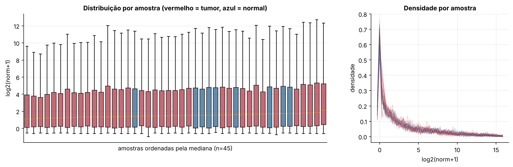
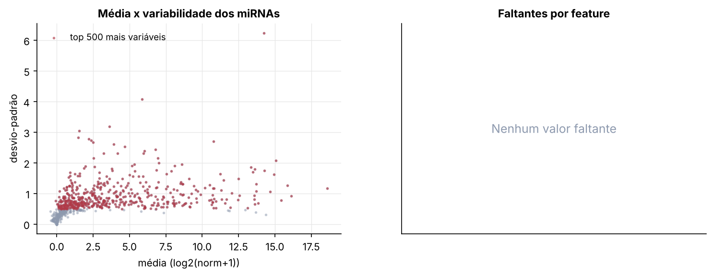
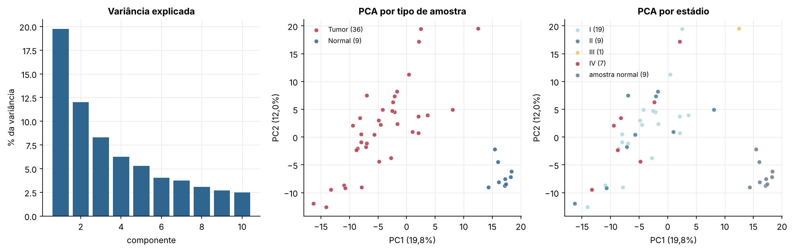
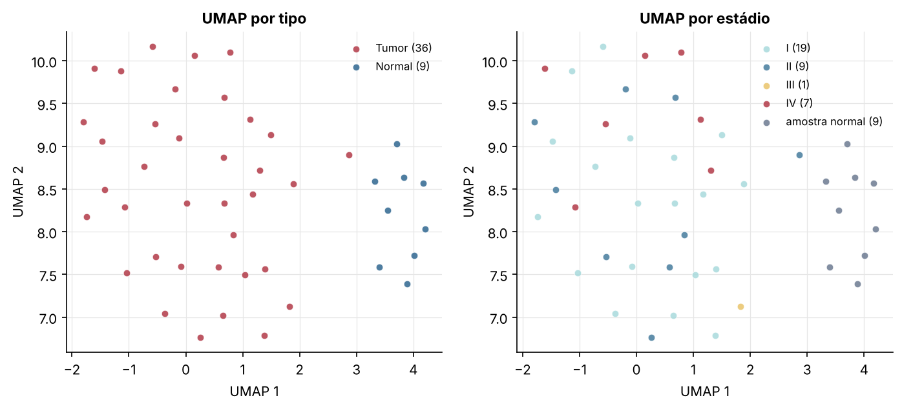
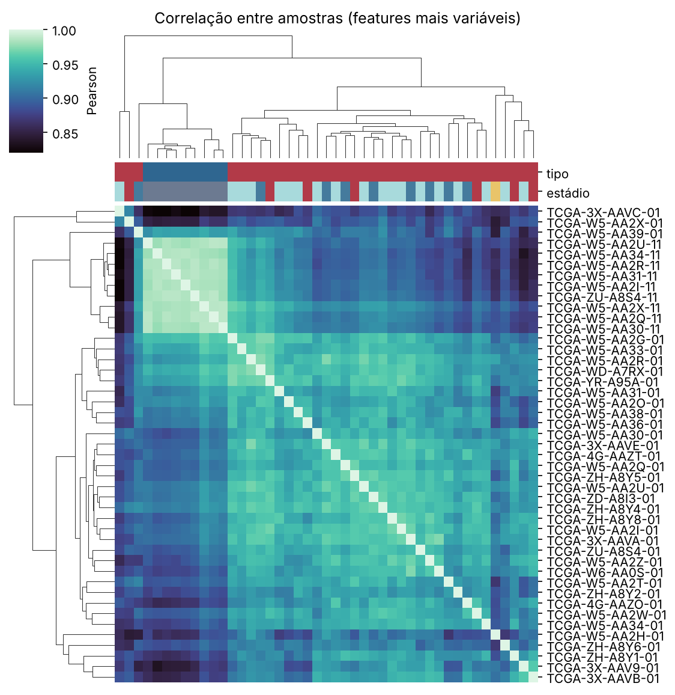
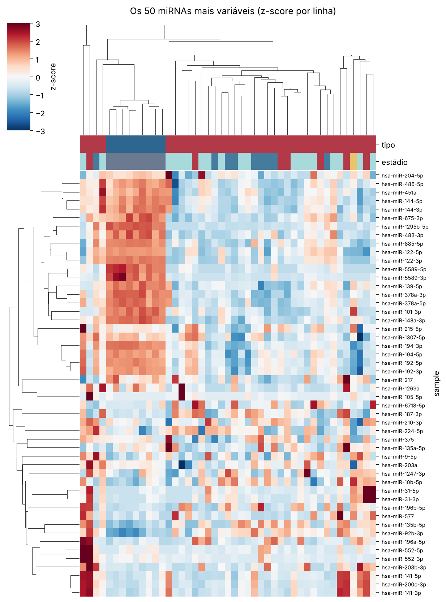
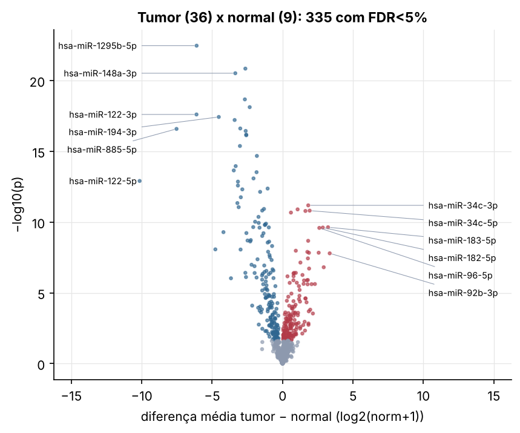
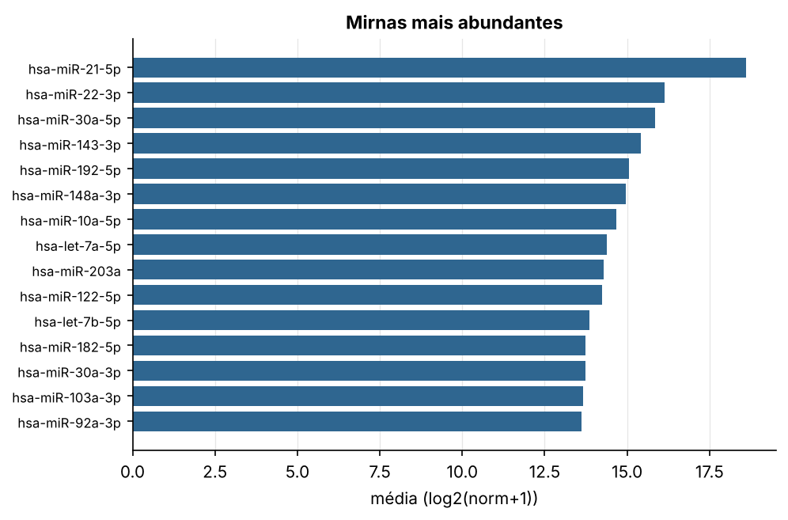

CHOL · miRNA-seq (PanCanAtlas)
miRNA maduro, normalizado e corrigido por lote (EB), log2(x+1) · gerado em 21/10/2026 19:03
743miRNAs
36amostras tumorais
9amostras normais
0,0%valores faltantes
Fonte: PanCanAtlas (pancanMiRs_EBadjOnProtocolPlatformWithoutRepsWithUnCorrectMiRs_08_04_16.xena)
Fita madura (5p/3p) já normalizada. As contagens brutas por precursor estão no relatório de contagens.
Principais resultados
- 743 miRNAs medidos em 45 amostras (36 tumorais e 9 normais); 0,0% dos valores estão faltando.
- Os dois primeiros componentes principais explicam 19,8% e 12,0% da variância das features mais variáveis.
- Correlação mediana entre amostras: 0,93.
- Tumor x normal: 335 miRNAs diferentes com FDR < 5% (160 maiores no tumor, 175 maiores no normal; 9 pacientes têm o par tumor-normal).
- Mais aumentados no tumor: hsa-miR-34c-3p, hsa-miR-423-5p, hsa-miR-34c-5p, hsa-miR-181b-5p, hsa-miR-183-3p, hsa-miR-183-5p, hsa-miR-182-5p, hsa-miR-96-5p.
- Mais reduzidos no tumor: hsa-miR-1295b-5p, hsa-miR-125b-2-3p, hsa-miR-148a-3p, hsa-miR-99a-5p, hsa-let-7c-5p, hsa-miR-122-3p, hsa-miR-194-3p, hsa-miR-101-3p.
- Nenhum dos três primeiros componentes principais se associou a estádio, sexo, idade ou sobrevida com p < 0,05.
Distribuição dos valores


Estrutura das amostras




Tumor x normal

Features mais diferentes entre tumor e normal
| sample | diferenca_tumor_menos_normal | t | p | fdr |
|---|---|---|---|---|
| hsa-miR-1295b-5p | -6.102 | -21.517 | 3.41e-23 | 2.47e-20 |
| hsa-miR-125b-2-3p | -2.641 | -18.067 | 1.42e-21 | 5.15e-19 |
| hsa-miR-148a-3p | -3.355 | -17.822 | 3.02e-21 | 7.31e-19 |
| hsa-miR-99a-5p | -2.677 | -15.722 | 2.12e-19 | 3.86e-17 |
| hsa-let-7c-5p | -2.334 | -15.444 | 7.52e-19 | 1.09e-16 |
| hsa-miR-122-3p | -6.11 | -15.881 | 2.47e-18 | 2.99e-16 |
| hsa-miR-194-3p | -4.528 | -14.529 | 3.71e-18 | 3.85e-16 |
| hsa-miR-101-3p | -3.402 | -15.239 | 6.1e-18 | 5.53e-16 |
| hsa-miR-139-5p | -3.004 | -14.065 | 2.41e-17 | 1.88e-15 |
| hsa-miR-885-5p | -7.528 | -13.984 | 2.59e-17 | 1.88e-15 |
| hsa-miR-483-5p | -2.618 | -13.839 | 3.61e-17 | 2.38e-15 |
| hsa-miR-148a-5p | -2.581 | -13.938 | 6.62e-17 | 4e-15 |
| hsa-miR-139-3p | -2.576 | -13.807 | 7.29e-17 | 4.07e-15 |
| hsa-miR-378a-5p | -3.026 | -13.809 | 4.18e-16 | 2.17e-14 |
| hsa-miR-1468-5p | -1.823 | -12.495 | 2.11e-15 | 1.02e-13 |
| hsa-miR-378a-3p | -3.329 | -14.37 | 1.11e-14 | 5.02e-13 |
| hsa-miR-192-5p | -3.464 | -11.517 | 2.23e-14 | 9.51e-13 |
| hsa-miR-383-5p | -1.845 | -13.561 | 2.97e-14 | 1.2e-12 |
| hsa-miR-511-5p | -2.062 | -10.806 | 8.16e-14 | 3.12e-12 |
| hsa-miR-122-5p | -10.147 | -11.423 | 1.24e-13 | 4.49e-12 |
| hsa-miR-4662a-5p | -3.167 | -13.971 | 1.38e-13 | 4.78e-12 |
| hsa-miR-192-3p | -3.17 | -10.749 | 2.6e-13 | 8.58e-12 |
| hsa-miR-17-3p | -1.06 | -10.261 | 4.25e-13 | 1.34e-11 |
| hsa-miR-194-5p | -2.857 | -10.199 | 4.85e-13 | 1.47e-11 |
| hsa-miR-152-3p | -1.594 | -10.935 | 7.27e-13 | 2.11e-11 |
| hsa-miR-144-3p | -2.963 | -10.748 | 1.75e-12 | 4.89e-11 |
| hsa-miR-144-5p | -3.208 | -9.872 | 4.53e-12 | 1.22e-10 |
| hsa-miR-34c-3p | 1.823 | 9.69 | 6.54e-12 | 1.69e-10 |
| hsa-miR-483-3p | -3.116 | -12.409 | 8.78e-12 | 2.2e-10 |
| hsa-miR-542-3p | -1.318 | -9.164 | 1.17e-11 | 2.84e-10 |
Associação com variáveis clínicas
p-valores da associação dos três primeiros componentes principais (só tumores) com estádio (Kruskal-Wallis), sexo (Mann-Whitney), idade (Spearman) e sobrevida global (Cox univariado).
| estádio (Kruskal) | sexo (Mann-Whitney) | idade (Spearman) | sobrevida OS (Cox) | |
|---|---|---|---|---|
| PC1 (17,1%) | 0.838 | 0.714 | 0.271 | 0.76 |
| PC2 (10,4%) | 0.45 | 0.861 | 0.604 | 0.156 |
| PC3 (7,3%) | 0.079 | 0.886 | 0.493 | 0.616 |
Mais abundantes
